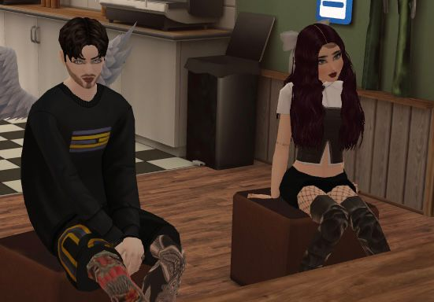

🌌 para la persona más bonita de mi universo
Las noches
que pienso en ti
Hay personas que se quedan en tu mente… 🌙
pero tú, mi niña, te quedas también en mi corazón. 💗
💞 Desde el día en que comenzó oficialmente lo nuestro
07 · 09 · 2026 ♡
Hecho con todo el amor de tu niño 🥹💗
✨ Lo que quisiera que supieras ✨
Hay personas que pasan por tu vida.
Y hay personas que la cambian de lugar. 🌍💫
Tú llegaste sin hacer ruido y, de pronto, mis días empezaron a tener un lugar donde descansar: tu nombre. 🏡💗
Me haces querer ser mejor. No para impresionarte, sino para merecer lo bonito que me haces sentir. 🥹✨
Y si algún día se te olvida lo mucho que vales, aquí voy a estar, recordándotelo con todo mi corazón. 🫶💞
Gracias por existir,
mi niña. 🌷
🌸 mi lugar favorito
Tú, mi niña bonita 💗
Mi niña bonita, Ferchis… 🌷
Hay noches en las que me quedo pensando en lo bonita que es la vida por haberme permitido coincidir contigo. No sé cómo explicarte lo que pasa por mi corazón cuando pienso en ti, pero es como si, entre tantas personas, tantos lugares y tantas historias, mi corazón hubiera encontrado en ti una de sus partes favoritas del mundo. 🌎💗
A veces quisiera que pudieras mirarte a través de mis ojos, aunque fuera por un solo instante, para que entendieras por qué me pareces tan hermosa, por qué tu sonrisa 😊 puede cambiarme el día y por qué hay pequeños detalles tuyos que se quedan dando vueltas en mi cabeza incluso cuando ya ha terminado el día.
Mi niña, tú apareces en mis pensamientos de las maneras más bonitas. En una canción 🎶, en una noche tranquila 🌃, en una palabra que me recuerda a ti y hasta en esos momentos en los que no estoy haciendo absolutamente nada. Simplemente llegas a mi mente y sonrío 🥰, porque qué bonito es tener a alguien que pueda hacerte sentir tanto con tan solo existir.
Y es que contigo aprendí que querer a alguien no siempre hace ruido. A veces se parece a una calma que llega de repente, a unas ganas enormes de que estés bien, a esa sonrisa tonta que aparece cuando veo tu nombre en la pantalla. Aprendí que hay cariños que no necesitan prisa para ser verdaderos, porque se sienten en el pecho como algo que ya estaba escrito. ✨
Si pudiera guardar un momento para siempre, no sería uno grande. Sería cualquiera de esos pequeños en los que me quedo mirándote, o imaginándote, y pienso: «qué suerte la mía». Porque la suerte, mi niña, no siempre llega como un premio. A veces llega como una persona que te cambia la forma de mirar el mundo. 🌈
A veces solamente estoy aquí, pensando en ti, queriéndote en silencio y sintiéndome afortunado de que seas tú, mi niña bonita. 🌙💗
📖 cómo se fue escribiendo esto
Nuestra historia, despacito 💞
No tiene que ser la historia más larga del mundo para ser la más importante de mi vida. Aquí van algunos capítulos, escritos con el corazón.
- 🌱 Antes de ti
Antes de que existiera un «nosotros», ya existías tú, siendo tú, sin saber que un día te volverías mi parte favorita del día. Qué bonito es pensar que el destino iba acomodando todo, en silencio, para que coincidiéramos. 🌌
- ✨ Cuando coincidimos
No sé en qué momento exacto pasó, pero algo dentro de mí supo que no eras una persona más. Fue como cuando una canción que nunca habías escuchado se siente, de inmediato, conocida. 🎶
- 💬 Las primeras pláticas
Esas conversaciones que empezaban «un ratito» y terminaban a medianoche. Ahí entendí que contigo el tiempo se pasa distinto: más suave, más bonito, demasiado rápido. ⏳💗
- 💘 07 · 09 · 2026
El día que comenzó oficialmente lo nuestro. Una fecha que ya no es solo un número en el calendario: es el día en que mi corazón dijo «sí» sin pedir permiso. 🥹💘
- 🌙 Hoy
Hoy te sigo pensando como la primera vez, pero con más cariño, con más certeza y con más ganas de cuidarte. Cada día contigo es un capítulo que no quisiera que se acabe. 📕💞
- 🚀 Lo que viene
Todavía faltan viajes, canciones, tardes lentas, abrazos largos y mil tonterías que nos van a hacer reír. Y quiero vivirlas todas contigo, mi niña. 🧳🌅💗
📸 pedacitos de nuestra historia
Lo bonito de nosotros 📸
Hay momentos que quizá parecen pequeñitos para el mundo, pero para mí se vuelven tesoros porque los relaciono contigo.

💬 Nuestras pláticas
Esas conversaciones en las que el tiempo se pasa volando y quisiera que la noche durara un poquito más. 🌙

🎁 Tus detalles
Las pequeñas cosas que haces sin darte cuenta y que terminan guardándose en un rincón especial de mi corazón.

😊 Tus sonrisas
Los momentos en los que me haces sonreír sin siquiera estar frente a mí. Eso también es magia, mi niña. ✨

🍿 Nuestros ratitos
Los planes sencillos que, contigo, se vuelven los mejores del mes. No hace falta más que estar juntos.

🫂 Tus abrazos
Ese lugar al que quiero volver cuando el día pesa. Si el hogar tuviera forma, sería la de tu abrazo. 🏠💗

💞 Nosotros
Dos personas, un montón de cariño y la certeza de que lo bonito apenas está empezando. 🌷
⭐ siempre encuentro algo más
Pequeñas cosas que amo de ti
Toca cada estrella, mi niña. Hay una razón escondida en cada una, y si las encuentras todas… pasa algo bonito. 💫
0 de 8 estrellas ⭐
💗 porque no me alcanzan los dedos para contarlas
Razones por las que te quiero
Toca el botón, mi niña. Tengo muchísimas razones guardadas para ti. 🥰
0 de 30 descubiertas
💌 para cuando me necesites cerquita
Ábreme cuando… 💌✨
Seis sobrecitos para esos momentos en los que no estaré a tu lado, pero sí en tus pensamientos.
🕊️ unas palabras para ti
Una cartita para mi Ferchis 💌
Mi Ferchis preciosa: 🌹
Si pudiera regalarte algo esta noche, te regalaría la oportunidad de verte como yo te veo, aunque fuera durante unos segundos. Quisiera que pudieras sentir todo el cariño que me nace cuando escucho tu nombre, cuando recuerdo tu risa o cuando imagino todas las cosas bonitas que todavía podemos vivir. ✨
Me gusta pensarte en las cosas sencillas: una canción que suena de fondo, el cielo cuando se llena de estrellas, una tarde tranquila o una noche 🌃 en la que quisiera contarte mil cosas y escucharte hablar de las tuyas. Porque para mí el amor también vive ahí, en lo cotidiano, en los detalles y en las ganas de compartir contigo hasta los momentos más simples.
No necesitas hacer nada extraordinario para ser especial para mí. Hay algo precioso en tu manera de existir, en tu esencia, en esas pequeñas cosas que te hacen ser mi niña bonita. Ojalá nunca te falten motivos para sonreír, sueños por cumplir y personas que te recuerden lo valiosa que eres. 🌷
Gracias por cada risa, cada momento, cada palabra y cada recuerdo que lleva un pedacito de ti. Si esta noche me encuentras pensando en alguien, seguramente serás tú, porque mi corazón tiene una costumbre muy bonita: encontrarme contigo incluso cuando solamente estoy mirando las estrellas. ⭐🥹
Quiero que sepas algo que quizá no te digo tanto como debería: me da una paz enorme saber que existes. Saber que en algún lugar estás tú, con tu risa, tus ocurrencias y tu manera tan especial de ver las cosas, hace que el mundo me parezca un lugar un poquito más amable. 🌍💗
Si algún día tienes miedo, quiero ser tu calma. Si algún día estás cansada, quiero ser tu descanso. Y si algún día todo sale bien, quiero estar ahí para celebrarlo contigo como si fuera el logro más grande del universo, porque para mí lo sería. Tus sueños también me importan, mi niña, y quiero verte alcanzarlos uno por uno. 🌟
No te prometo ser perfecto. Te prometo ser sincero, cuidarte con cariño, hacerte reír cuando se pueda y quedarme cuando se necesite. Te prometo que mi corazón va a seguir eligiéndote, incluso en los días normales, que son los que más cuentan. 🫶💞
Te Amo muchísimo, mi niña bonita. Hoy, esta noche y en todos esos pequeños instantes en los que el mundo se queda en silencio y mi pensamiento se va contigo. 🌙💗
Con todo mi amor,
tu niño 💗🥹
🤞 lo que mi corazón te firma esta noche
Las cosas que te prometo 💍
- 👂 Escucharte incluso cuando no digas nada, porque a veces el silencio también tiene voz.
- 🛡️ Cuidar tu corazón como si fuera mío, porque desde que llegaste, lo es un poquito.
- 🤝 Estar en tus días bonitos y en los que pesan, sin hacerte sentir que estorbas.
- 🎉 Celebrar tus logros como propios, grandes o pequeños, hasta los que tú ni notas.
- 😂 Hacerte reír cuando el día se ponga serio, aunque sea con la tontería más tonta.
- 💘 Elegirte hoy, mañana y en todos los días normales que, contigo, ya no lo son.
💫 un sueño bonito
Mi sueño más bonito 🌠
Imagino noches compartidas, abrazos que duren un poquito más, risas por cualquier tontería, canciones 🎶 que algún día nos recuerden a nosotros y muchos momentos sencillos que se vuelvan inolvidables solo porque los vivimos juntos.
Y si alguna vez miras la luna y piensas en mí, quiero que recuerdes esto: en algún lugar, tu niño también estará mirando el cielo, sonriendo por tenerte en su vida. 🌕💗
Sueño con una vida donde ninguno de los dos tenga que fingir, donde nos celebremos en voz alta, donde nos abracemos fuerte los días difíciles y nos riamos de lo pequeño. Una vida con tu mano en la mía, sin prisa y sin miedo. 🤍🌅
qué bonito es coincidir contigo. 💗
🌙 si llegaste hasta aquí…
…ya sabes que eres
mi pensamiento favorito. 💗
Esta página es solo un pedacito de lo que siento por ti. El resto no cabe en palabras, pero lo vas a sentir en cada abrazo, en cada mensaje y en cada noche en la que mi corazón se vaya contigo. 🥹✨
Te Amo con todo mi corazon, mi niña. 💞
— tu niño 🫶💗